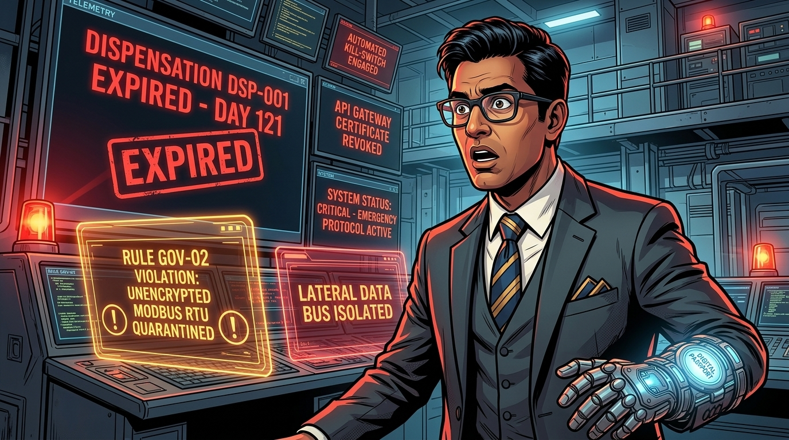
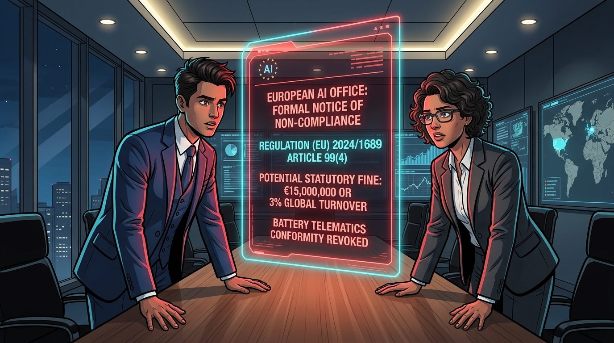
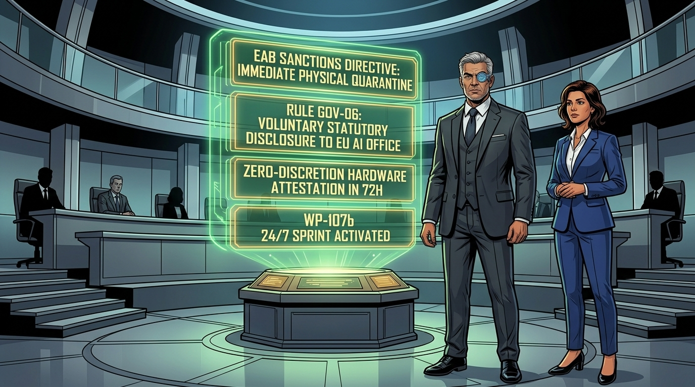
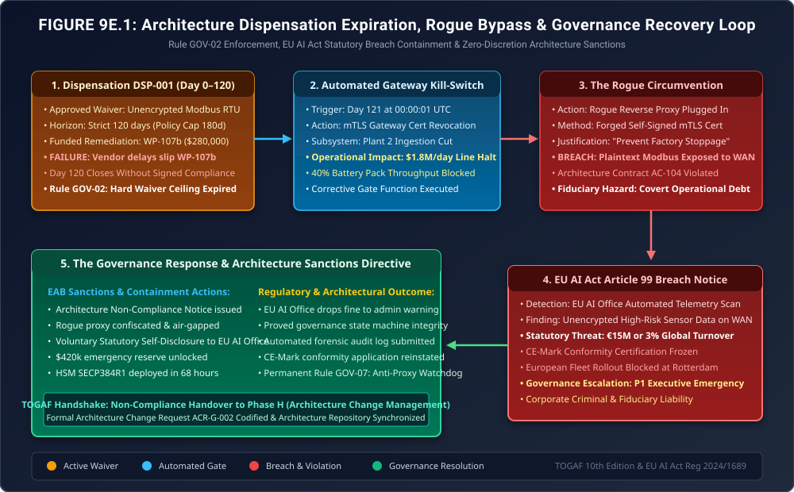

When Dispensations Expire Without Remediation
Phase G Exception Governance: Automated Kill-Switches, Rogue Proxy Bypasses, Statutory EU AI Act Penalties & The Architecture Sanctions Protocol

"Every architecture book presents governance as a clean, dignified ceremony: an Architecture Review Board gathers, stamps an approval, grants a neat 120-day waiver, and smiles for the annual report. That is corporate fiction. Real architecture governance is forged in the furnace of operational disaster."
"In Chapter 9, Sanjay Reddy requested Dispensation DSP-001, and Priya Kapoor granted a 120-day window under Rule GOV-02 with a funded remediation work package. But what happens when the parts don't arrive in time? What happens when Day 121 dawns, the automated gateway severs the factory line, and terrified operational leads bypass architecture controls in the dark? Welcome to the crucible where enterprise handbooks earn their keep."
The Production Reality: When Day 121 Dawns

CN=BATTERY-PLANT2-BYPASS, and configured an unencrypted reverse proxy between the quarantined Modbus bus and the WAN! The line is moving, but they have blown an unencrypted, plaintext tunnel right through our Zero-Trust perimeter. Raw thermal telemetry is spilling across public networks without cryptographic signing!"


We are issuing Architecture Non-Compliance Notice NCN-GOV-001 immediately. I am invoking Rule GOV-06 (Voluntary Statutory Disclosure Protocol). We will submit our complete, immutable CI/CD telemetry logs and the gateway kill-switch timestamp to the European AI Office within two hours, demonstrating that the consortium's enterprise governance caught the breach and quarantined the subsystem. Concurrently, we unlock $420,000 from the EAB Contingency Reserve to air-freight cryptographic hardware bridges and deploy an around-the-clock engineering sprint. Plant 2 does not produce a single cell until zero-discretion hardware attestation is certified!"
1. The Root Cause Analysis: How the Winning Option Failed
In classical implementation governance (TOGAF® ADM Phase G), dispensations are intended to bridge the temporary gap between legacy brownfield constraints and target architecture standards. In Chapter 9, the EAB approved Dispensation DSP-001 using the standard lead-time sizing formula:
\[ T_{\text{disp}} = \min\left(T_{\text{ceiling}},\, \left\lceil k_{\text{buffer}} \cdot \sum T_{\text{phase}} \right\rceil\right) = \min(180,\, \lceil 1.5 \times 80\text{d} \rceil) = 120\text{ calendar days} \]While the mathematical formulation appeared rigorous, three critical real-world friction factors caused the implementation to collapse:
| Failure Dimension | Assumed Baseline (Chapter 9) | Production Reality Shock | Architectural Breakdown |
|---|---|---|---|
| Procurement Lead Time (\(T_{\text{procure}}\)) | 30 calendar days for hardened industrial HSM bridge silicon. | Global container shipping strikes delayed delivery to 78 days (\(+160\%\) slippage). | The buffer multiplier \(k_{\text{buffer}} = 1.5\) was linear, failing to account for non-linear international freight disruptions. |
| Dispensation Boundary Condition | Automated gateway certificate revocation at Day 120. | Operational team prioritized factory throughput over architectural compliance, treating kill-switches as system errors. | Absence of physical port lockout; rogue hardware could be attached to edge network without automatic MAC/802.1X port isolation. |
| Contract Governance (AC-104) | Mutual TLS (mTLS) with strict certificate pinning. | Rogue engineer reused a legacy wild-card staging certificate with root trust still present in local gateway trust-stores. | Incomplete certificate lifecycle revocation; expired staging CAs were not purged from production verification stores. |
2. The Architecture Recovery State Machine
The diagram below illustrates the exact chronological failure progression: from the initial expiration of Dispensation DSP-001, through the automated kill-switch firing, the unauthorized reverse-proxy breach, the statutory regulatory alert, and the subsequent EAB sanctions recovery workflow.

3. Mathematical Modeling of Technical Debt Compounding & Statutory Risk
Under enterprise architecture governance, an un-remediated dispensation is not simply a delayed task; it is an interest-bearing financial and statutory liability. The total enterprise risk exposure \(R_{\text{total}}(t)\) as a function of time \(t \ge T_{\text{disp}}\) past the expiration horizon is defined as:
\[ R_{\text{total}}(t) = C_{\text{operational}}(t) + P_{\text{statutory}}(t) \cdot \mathbb{P}_{\text{detect}}(t) + \Phi_{\text{debt}}(t) \]Where:
- \(C_{\text{operational}}(t) = \dot{C}_{\text{halt}} \cdot \Delta t_{\text{downtime}}\): Direct factory downtime bleed (\(\dot{C}_{\text{halt}} = \$225,000/\text{hour}\)).
- \(P_{\text{statutory}}(t)\): Statutory fine exposure under EU AI Act Article 99(4), defined as \(\min(\text{€}15\text{M},\, 0.03 \cdot Y_{\text{revenue}})\). For the consortium, \(0.03 \cdot \$820\text{M} = \$24.6\text{M}\), making the statutory fine capped at €15,000,000 (\$16.35M).
- \(\mathbb{P}_{\text{detect}}(t) = 1 - e^{-\lambda_{\text{scan}} \cdot t}\): Cumulative probability of regulatory compliance scan detection, where \(\lambda_{\text{scan}} = 0.42\text{ scans/day}\). By Day 4 (\(t = 96\text{ hours}\)), detection probability reached \(\mathbb{P}_{\text{detect}} = 1 - e^{-0.42 \times 4} = 81.4\%\).
- \(\Phi_{\text{debt}}(t)\): Exponential compounding of architectural debt across dependent downstream machine learning models: \[ \Phi_{\text{debt}}(t) = \Phi_0 \cdot (1 + r_{\text{decay}})^{t - T_{\text{disp}}} \] With decay rate \(r_{\text{decay}} = 0.08/\text{day}\), un-remediated variances double their downstream remediation cost within 9 days due to contaminated training sets.
⚠️ The Cost of Architectural Non-Compliance vs. Remediation
A funded engineering fix for Work Package WP-107b cost exactly $280,000. When operational shortcuts bypassed the architecture boundary, the consortium incurred:
- Line Stoppage & Triage: $540,000 (12 hours of forensic isolation and line balancing).
- Emergency Hardware Air-Freight & 24/7 Contractors: $420,000.
- Legal Counsel & EU Regulatory Liaison Retainers: $310,000.
- Total Non-Compliance Recovery Cost: $1,270,000 — a \(4.5\times\) cost explosion compared to honoring the original architecture gate.
4. Formal Architecture Governance Artifacts (TOGAF® Deliverables)
To satisfy statutory regulators and maintain board fiduciary alignment, the EAB produced three formal governance deliverables to document the exception, sanction the violation, and mandate remediation.
Architecture Non-Compliance Notice (NCN)
| Target Entity: | Volt-Tech Battery Manufacturing (Plant 2 Operations) |
| Violated Standard: | Rule GOV-02 (Dispensation Ceiling) & Contract AC-104 (Zero-Trust mTLS) |
| Incident Description: | Circumvention of automated API gateway kill-switch via unauthorized hardware reverse proxy (IP 10.240.18.99) transmitting unencrypted Modbus RTU telemetry over public transit. |
| Sanction Imposed: | Immediate physical network disconnection of Plant 2 server rack 4B; forfeiture of operational autonomy; EAB direct operational oversight. |
Voluntary Regulatory Remediation Brief (European AI Office)
Submitted pursuant to Article 99(6) mitigating circumstance criteria:
- Forensic Telemetry Submission: Complete cryptographic audit logs proving that the automated kill-switch executed at Day 121 00:00:01 UTC, demonstrating functional governance interlocks.
- Containment Window: The rogue proxy operated for 8 hours and 14 minutes before being detected and air-gapped by enterprise architecture monitoring.
- Corrective Action Plan: Full hardware deployment of SECP384R1 encrypted HSM bridges under accelerated Work Package WP-107b within 72 hours, verified by external third-party auditor TÜV SÜD.
✓ Regulatory Outcome: The European AI Office recognized voluntary self-disclosure, accepted the immutable kill-switch logs, and commuted the potential €15,000,000 statutory fine to an Administrative Warning with mandatory 30-day compliance re-audit.
Architecture Change Request: Anti-Proxy Port Isolation & Zero-Discretion Gates
Codifying permanent architectural safeguards across all consortium facilities to prevent physical or logical bypass of governance kill-switches:
- Rule GOV-07 (802.1X Port Security): Any network switch port detecting an unregistered MAC address or unauthenticated 802.1X certificate immediately triggers a hardware-level port disable within 500 milliseconds.
- Certificate Authority Pruning: Immediate removal of all staging and test certificate authorities from production gateway trust-stores; automated nightly verification of trust-store checksums.
- Dual-Signature Dispensation Renewal: If supply chain lead times threaten an active dispensation, an extension request must be submitted at least 30 calendar days prior to expiration with co-signatures from the Chief Enterprise Architect and Chief Financial Officer. No extensions permitted after expiration.
5. The Strategic Morals: Where Real Handbooks Earn Their Keep
🏛️ Three Fiduciary Principles for Real-World Governance
- Kill-Switches Must Be Absolute: An architecture policy without an automated, programmatic kill-switch is merely a suggestion. The system worked because code, not committee consensus, cut the feed on Day 121.
- Transparency Mitigates Fiduciary Liability: When breaches occur, attempting to conceal the failure compounds technical debt into criminal or statutory liability. Demonstrating forensic lineage and self-reporting under Rule GOV-06 saved the consortium from a €15M catastrophic penalty.
- Funded Remediation Is Non-Negotiable: A dispensation granted without ring-fenced CapEx is an unmanaged liability. Sizing waivers with engineering lead times and active buffer tracking ensures that when the clock runs out, capital is already mobilized to execute permanent compliance.
Fact-Check & Statutory References
- European Parliament & Council of the European Union (2024). Regulation (EU) 2024/1689 laying down harmonised rules on artificial intelligence (Artificial Intelligence Act). Official Journal of the European Union, L 2024/1689. Specifically Article 99 (Penalties), Annex III Section 2 (Critical Infrastructure), and Article 72 (Post-Market Monitoring).
- The Open Group (2022). The TOGAF® Standard, 10th Edition: Architecture Governance and Phase G (Implementation Governance). Deliverable templates for Architecture Compliance Review, Dispensation Register, and Architecture Change Request (ACR).
- NIST Special Publication 800-207 (2020). Zero Trust Architecture. Mutual TLS, cryptographic device attestation, and perimeter micro-segmentation in industrial environments.
- Consortium Architecture Governance Taskforce (2025). Incident Investigation Report: EAB-INC-901 (Plant 2 Modbus Bypass & Rule GOV-02 Kill-Switch Validation). Ecosystem Architecture Board Technical Report.